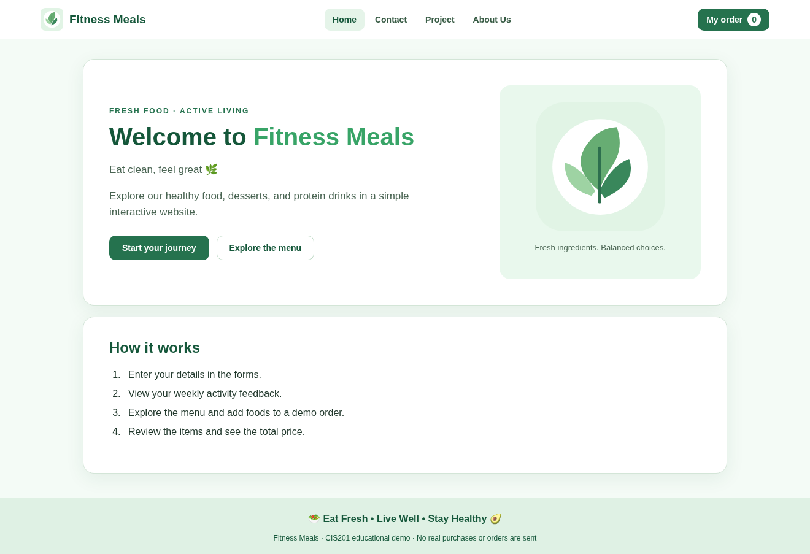
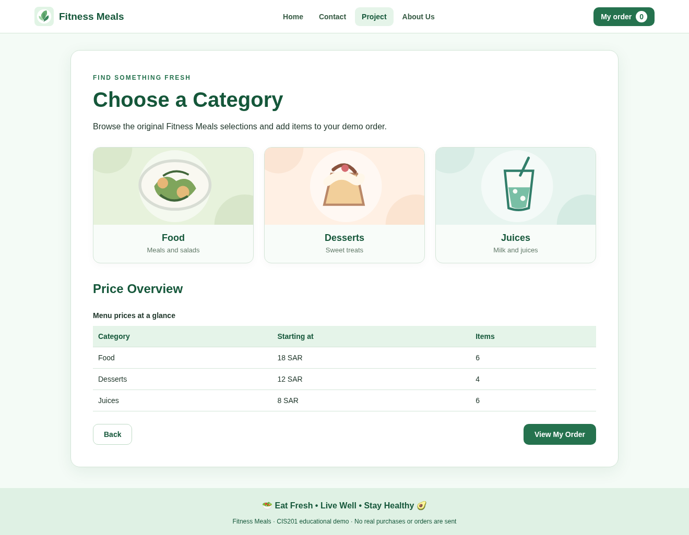
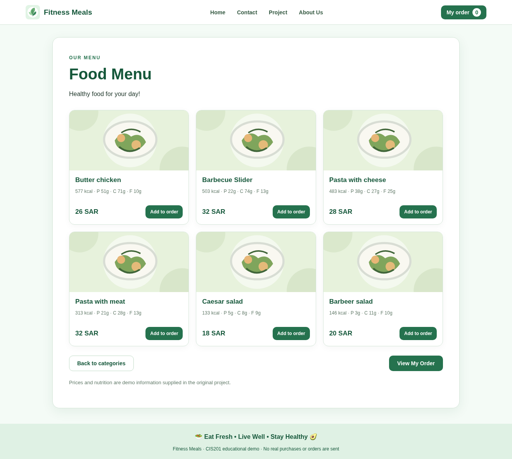
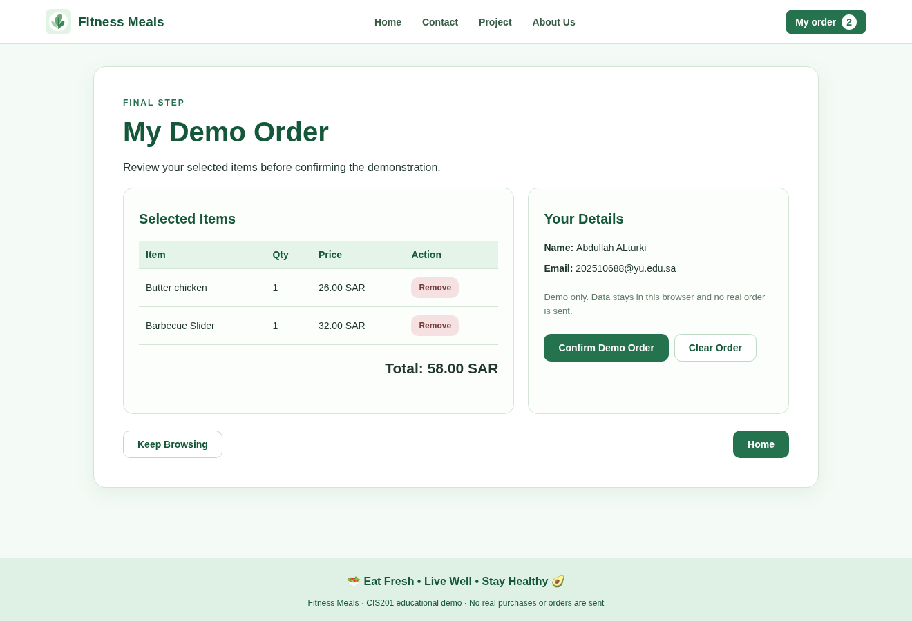
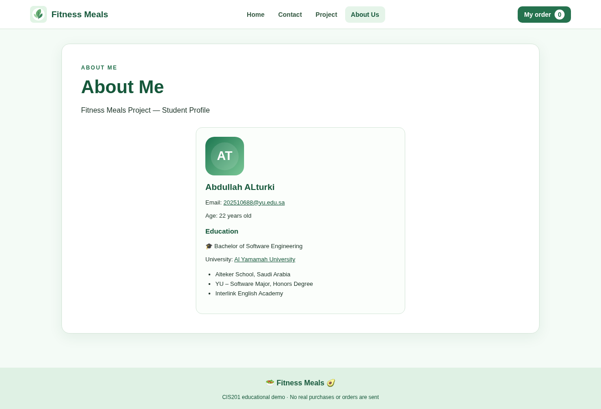

Fundamentals of Web Design — Course Project Report
Prepared by: Abdullah ALturki
Email: 202510688@yu.edu.sa
Age: 22 years old
Project type: Interactive restaurant and healthy meals website
Technologies: HTML, CSS, JavaScript
Course: CIS 201
Fitness Meals is a multi-page educational website for exploring healthy food, desserts, and beverages. It demonstrates HTML forms, navigation links, images, lists, tables, CSS layouts, and client-side JavaScript programming.
| File | Page and function |
|---|---|
| index.html | Home page, navigation, introduction and ordered steps |
| page1.html | Name and gender form with JavaScript data processing |
| page2.html | Contact form with phone and email validation |
| page3.html | Date of birth, height and weight entry with validation |
| page4.html | Calorie entry, conditional message and Next button |
| page5.html | Menu categories and a prices table |
| page6.html | Food list with images, nutritional details and Add buttons |
| page7.html | Dessert list with prices and Add buttons |
| page8.html | Drinks list with prices and Add buttons |
| page9.html | Order review, calculated total and a demo confirmation |
| about.html | About Us student profile and unordered education list |
Semantic elements: header, main, nav, footer; headings and paragraphs; anchor links; image elements; forms with input, label, radio buttons and submit buttons; ordered and unordered lists; a structured price table.
A shared external style sheet (mysheetc.css) defines consistent colors, type, backgrounds, padding, margins, borders, hover effects, grid layouts, and responsive screen-size rules. CSS class and ID selectors are used throughout.
if/else if/else.The website uses localStorage for the demonstration on the user's own browser. It has no database and sends no actual orders.





| Challenge | Solution |
|---|---|
| Original image files were not provided | Replaced missing image references with local original SVG illustrations, preventing broken images. Real photos can be inserted later. |
| Missing or extra closing HTML tags | Rebuilt the HTML structure with matching semantic and layout tags. |
| Forms did not store entered information | Added JavaScript validation and local browser storage. |
| The menu had no working order calculation | Added a demo cart, item quantity calculations and total price display. |
| Invalid calorie inputs could continue | Added numeric validation and conditional display of the Next button. |
Checked internal file references, element IDs, JavaScript syntax, image loading, form navigation logic, calorie feedback, cart additions, price calculation, demo confirmation, and cart reset. The project contains 11 linked HTML pages and is designed to run locally.
[ADD YOUR REAL GITHUB REPOSITORY URL HERE]
Fitness Meals is an interactive multi-page website built with HTML, CSS and basic JavaScript. It demonstrates navigation, user forms, validation, conditional messages, image interactions and simple arithmetic through a restaurant-themed example. The result can be extended with a real backend and original food photography if desired.
End of CIS201 project report